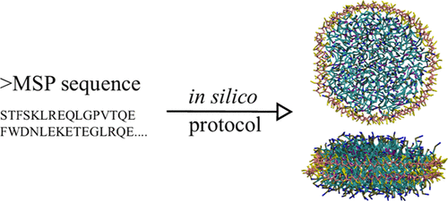
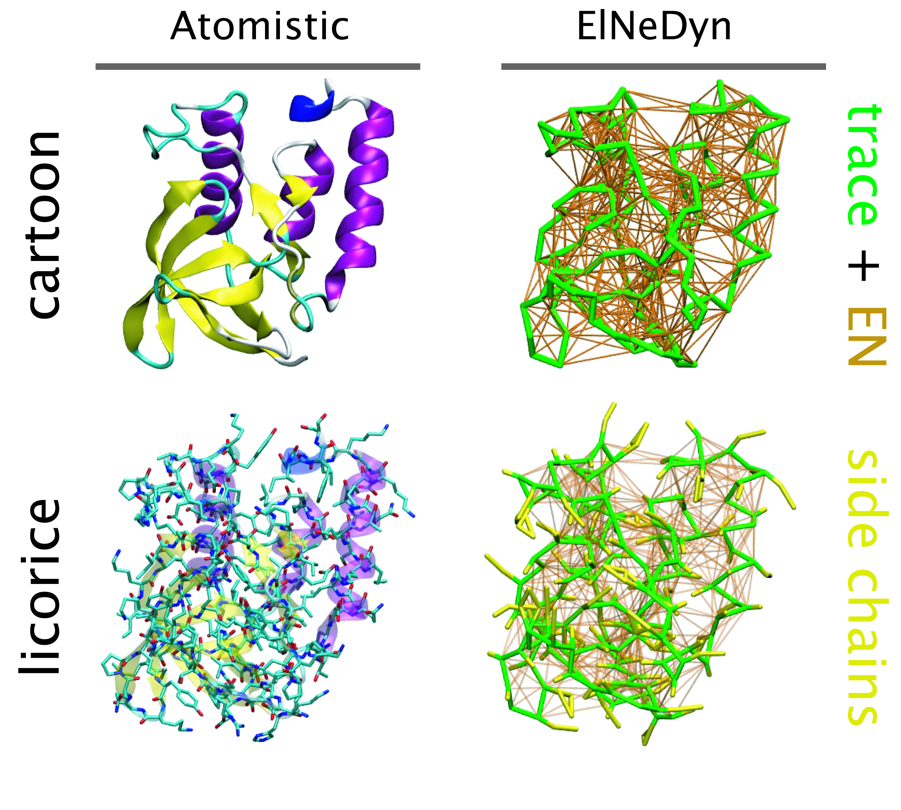

Proteins and bilayers
ProLint
The Tieleman group has developed a new webserver coined ProLint, a user-friendly framework for the automated analysis and interactive visualization of Protein-Lipid interactions, supporting the Martini forcefield. The webportal can be accessed at https://www.prolint.ca/, and details are described in this paper.
For questions, please contact Peter Tieleman (tieleman@ucalgary.ca)
PCALipids Tool
Principal components analysis is a standard approach to study conformational changes in biological molecules, in particular when the free energy lanscape has only one global minima. PCAlipids is a Python-based software that performs complete quantitative analysis of conformations and dynamics of lipids or other small molecules. The information about the approach can be found in the following papers:
- Principal Component Analysis of Lipid Molecule Conformational Changes in Molecular Dynamics Simulations, Buslaev et al., JCTC 2016
- Effects of Coarse Graining and Saturation of Hydrocarbon Chains on Structure and Dynamics of Simulated Lipid Molecules, Buslaev & Gushchin, Sci. Rep. 2017
PCALipids can be downloaded here: https://github.com/membrane-systems/PCAlipids
A brief tutorial: https://github.com/membrane-systems/PCAlipids/blob/master/tutorial/tutorial.md

For questions please contact Khalid Mustafin (khalid.mustafin@phystech.edu), Pavel Buslaev (pbuslaev@phystech.edu) or Ivan Gushchin (ivan.gushchin@phystech.edu).
MDVoxelSegmentation
When working with large systems containing multiple bilayers or other dynamic macroscopic objects, it tends to come more natural to give these aggregates an identity of their own. This is exactly what MDAVoxelSegmentation does for amphipathic Martini systems. It not only detects bilayers/leaflets or other aggregates using a voxel based architecture, but it also keeps track of such entities over time. For more information take a look at the github or contact the developers! As an appetizer we added a rendered movie and graph describing how the transfection of dsDNA from a lipid-DNA complex occurs over a membrane (doi: 10.7554/eLife.52012).

Nanodisc builder
Nanodisc technology is increasingly being applied for structural and biophysical studies of membrane proteins. Here you can find a general protocol for constructing nanodiscs for molecular dynamics simulations. The protocol is written in python and based on geometric equations, making it fast and easy to modify, enabling automation and customization of nanodiscs in silico. The tool allows one to efficiently construct any membrane scaffold protein (MSP) variant given only an input sequence.

The tool, developed by Lisbeth Kjølbye in the group of Birgit Schiøtt, can be found here: https://github.com/LHRK/Nanodisc-Builder
A paper describing the tool and showing examples of its validation is published in JCIM: https://pubs.acs.org/doi/10.1021/acs.jcim.1c00157
Leaflet identification and analysis
Wlison et al. introduce a collection of membrane analysis tools suitable for Martini, built upon the MDAnalysis package. The first and most fundamental is a method for identifying leaflets in a membrane based on spectral clustering (LeafletFinder). Once leaflets are identified, there are several leaflet-based analysis classes: the LipidEnrichment class for calculating the depletion-enrichment index of lipid groups, LipidFlipFlop class for calculating flip-flop, and the AreaPerLipid class for lateral area per lipid. For more information please visit https://github.com/OMaraLab/SLC6_lipid_fingerprints.
See also the associated paper: https://www.sciencedirect.com/science/article/pii/S2667160321000090
Go-Martini
For ongoing development of Go-Martini, see the webpage of Adolfo Poma: http://pomalab.ippt.pan.pl/web/index.html
Analyze lipid fingerprints
The following script, based on work of Corradi et al. [1], is provided for all your lipid fingerprint analysis needs. Special thanks to Amanda Buyan and Helgi Ingólfsson!
Download the script here. Please note that Python 2.7 (or equivalent) is required. For help on how to use it, simply type “python lipid-PM-counter-fix-v3.0.py -h”
[1] V. Corradi, E. Mendez-Villuendas, H.I. Ingólfsson, R.X. Gu, I. Siuda, M.N. Melo, A. Moussatova, L.J. DeGagné, B.I. Sejdiu, G. Singh, T.A. Wassenaar, K. Delgado Magnero, S.J. Marrink, D.P. Tieleman. Lipid–Protein Interactions Are Unique Fingerprints for Membrane Proteins. ACS Central Science 4:709–717, 2018
martinize
Martinize is a python script to generate Martini protein topology and structure files based on an atomistic structure file. It replaces the old seq2itp, atom2cg and ElNeDyn scripts. The produced topology and structure files are in a format suitable for Gromacs.
The current version (2.x) has been used rather extensively, however it might still contain errors or bugs. Any feedback is more than welcome! The script is “concatenated”: all the different classes, modules and forcefields are in one file. If you want to make changes yourself or add a forcefield we have a modular version available. If you would like to use this, send us an e-mail.
You can now also download the latest martinize from GitHub. The major updates are always added also here below:
- martinize.py and python 3 version martinize.py (version 2.6, May 12 2016)
- The option for the elastic bond lower cutoff (-el) is now correctly recognized.
- Cys bonds in gro-files and pdb-files without chain identifier are now correctly identified.
- Many, many code clean-ups and restructuring.
- martinize.py (version 2.5, August 11 2015)
- Removed warnings about beta status of Martini 2.2.
- Bug fix: Fixed cases where Cys-Cys constraints were not recognized as such.
- martinize.py (version 2.4, August 18 2013)
- Inverted “define NO_RUBBER_BANDS” behavior.
- Changed protein backbone constraints to bonds.
- Changed HIS BB-SC constraint to bonds.
- Bug fix: Cys-bond length and force constant.
- Bug fix: Position restraints are correctly written out when multiple chains are merged.
- martinize.py (version 2.3, February 13 2013)
- Bug fix: Correctly call dssp.
- Bug fix: Correct error message when atoms are missing.
- Bug fix: Correctly merge topologies of multiple change in case of Martini 2.2P.
- martinize.py (version 2.2, November 27 2012)
- Added charged His to all forcefields and options to choose the His-charge state.
- Bug fix: correctly handle .gro files.
- Bug fix: Correctly handle .pdb files containing hydrogens.
- Bug fix: bead types correctly set in helix starting at first residue.
- Fixed small inconsistencies in elnedyn forcefields.
- Cleaned up and added help text and warning messages.
- martinize.py (version 2.0, July 25 2012)
- Major clean-up and restructuring of the code.
- Changed forcefield selection. Forcefield now available: Martini 2.1, Martini 2.1P, Martini 2.2, Martini 2.2P, Elnedyn, Elnedyn 2.2 and Elnedyn 2.2P.
- Added function to handle new polar and charged residues in Martini 2.2P.
- Several small bug fixes.
- martinize-1.2.py (version 1.2, May 22th 2012)
- Fixed bug with counter in multi chain topologies.
- Corrected wrong collagen parameters.
- Fixed bug involving BBBB dihedrals in extended regions.
- Fixed bug when giving secondary structure as string.
- A test set is now available.
- martinize-1.1.py (version 1.1)
- Fixed bug in pdb read-in.
- Clean up of code.
- martinize-1.0.py (version 1.0)
Insane
insane.py is a python script to setup Martini bilayer systems. It handles a broad range of different lipid types, is very flexible with respect to box types and can insert a (CG) protein structure in the bilayer if one is given. Help text and options are obtained by typing: insane.py -h
Read much more about insane from the insane paper: DOI: 10.1021/acs.jctc.5b00209
2015.06.25 – insane was updated adding a few features, fixing a few bug and the lipid templates now use the new lipid-naming schema, the old templates are still available with a .o after the name e.g. “DHPC.o”.
ElNeDyn
ElNeDyn stands for Elastic Network in Dynamics. In this approach an elastic network (EN; a set of springs or harmonic bonds between interacting sites) is used as a structural scaffold to describe and control the overall shape of a molecule. The EN is then combined with a coarse-grained molecular force field to describe the intra- and inter-molecular interactions.

The current version of ElNeDyn focusses on modeling proteins and has been developed in conjunction with the Martini CG force field (2.0, 2.1) but can in principle be mixed with any CG model for any type of molecule. The Martini FF presents the great advantage to include a large body of biomolecules and solvents making simulations of biomolecular systems actually possible.
The rationale for the use of EN is to control the conformation of the protein while keeping its internal dynamics. This has been possible by parametrizing the EN against atomistic model simulations. By tuning the force constant of the springs and the extend of the network, backbone deformations, fluctuations and large amplitude domain motions observed in atomistic simulations of proteins have been matched. For more detail refer to X. Periole et al. 2009 JCTC 5:2531-43.
One notable detail is that the description of the bonded terms defined in original Martini for proteins has been slightly modified to accommodate for the placement of the backbone bead on the Calpha instead on the center-of-mass of the backbone atoms. The non-bonded terms were used as in the original force field.
In the following you’ll find a tar.gz file containing the scripts and programs (listed below) that will allow you to build the topology of protein from a pdb file.
Download: ElNeDyn-2.1.tar.gz
Files and short description: - AA.dat : contains the definition of the amino acids. - cg-2.1.dat : contains the definition of the bonded terms. - cg-2.1.dat.comments : description of the content of cg-2.1.dat. - pdb2CGpdb-2.1.f : fortran code reading a pdb file of a protein and giving a CG version of it. - topol-CG-2.1.f : fortran code reading the CG coordinates and building the ElNeDyn topology. - HowTo-ElNeDyn.pdf : a step-by-step description of the procedure to get from the pdb file to an MD run. - a set of mdp files to minimize, relax and simulate your ElNeDyn model.
For more information contact Xavier Periole (x.periole@rug.nl).
The development of ElNeDyn is done in close collaboration with Prof. M. A. Ceruso at the CCNY-CUNY in New York City, USA.
DAFT - Docking Assay For Transmembrane Components
DAFT is a method for investigating protein-protein and protein-lipid interactions by running many association simulations. These allow identifying the binding hotspots and alternative binding sites.
DAFT is a bundle of programs and supporting files, and comprises martinize, martinate, insane, and several MARTINI interaction table generating Python scripts, toghether with the standard lipid, ion and solvent topologies. The user interface is formed by the bash script daft.sh (see daft.sh -h for more information).
More background on this DAFT approach can be read in the DAFT paper: DOI: 10.1021/ct5010092
Flux calculator
This tool calculates fluxes across either a whole bilayer or through a defined channel. The trajectory must have been treated with -pbc nojump and, if analyzing the flux through a channel, care must be taken to ensure the channel is kept whole in the trajectory (use -pbc cluster).
Please cite J. Am. Chem. Soc., 2017, 139 (7), pp 2664–2671 whenever using results generated by fluxer.py.
Check the script’s project page for more information on usage and to submit bugs.
seq2itp
A perl script to build your own peptide/protein topology (.itp). Use the -h option to see what it can do. As input it requires the amino acid sequence (.seq) and the secondary structure information (.ssd).
- seq2itp.pl (version 1.1.5)
- martini_v2.1_example.seq
- martini_v2.1_example.ssd
atom2cg
A simple awk script that converts an atomistic PDB file to a coarse grained PDB file.
molmaker.py: Create molecule coordinates from their .itps
This tool creates a .gro from an .itp file. It works by randomly scattering coordinates along a linear stretch and then performing an evil minimization as VdW and charges are faded in (using the free energy code). As you already guess, it’s totally useless for proteins unless you want a linear segment (in which case it works pretty well!).
Additionally, molmaker.py will likely not preserve your chiral centers unless you protect them in your topology using some sort of dihedral potential/restraint. Alternatively you might want to hand-correct each center using other tools and then energy-minimizing.
Check the -h flag for more details. Please report bugs in the GitHub project.